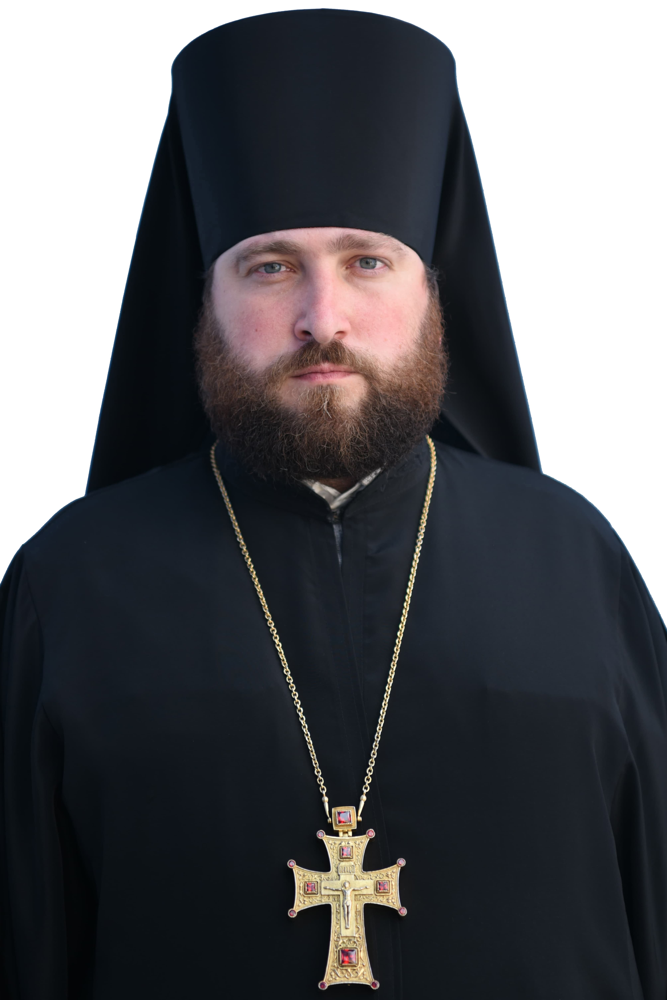
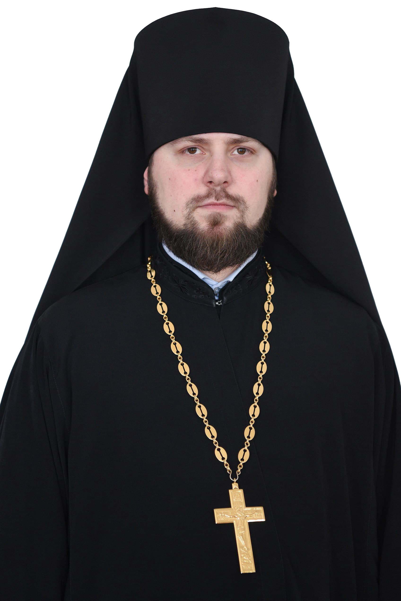

Братія
Свято-Михайлівського Золотоверхого монастиря
-

В миру — Віктор Володимирович Живчик. Народився 23 листопада 1976 р. в с. Кошляки Підволочиського р-ну, Тернопільської обл.
Лаврентій (Живчик)
Архімандрит
-

В миру - Хом’як Валентин Богданович. Народився 3 лютого 1990 року в с.Вербень, Демидівськго р-ну, Рівненської обл. в сім’ї робітників.
Єфрем (Хом'як)
Архімандрит
-

В миру - Остап Олексійович Остапенко. Народився 27 грудня 1981 року в місті Дрогобичі Львівської обл.
Олексій (Остапенко)
Ігумен
-

В миру – Стебиволк Євген Михайлович. Народився 19 липня 1981 року у м. Тернопіль.
Арсеній (Стебиволк)
Ігумен
-

В миру - Карнаух Назарій Іванович. Народився 26 жовтня 1991 року в місті Почаєві, Кременецького р-ну, Тернопільської обл., у сім’ї робітників.
Михаїл (Карнаух)
Ієромонах
-

В миру - Ляхович Іван Ігорович. Народився 15 грудня 1990 р. в с. Зимна Вода Пустомитівського р-н., Львівської обл., в сім'ї священнослужителя.
Феодосій (Ляхович)
Ієромонах
-

В миру - Максим Павлович Александров. Народився 05 березня 1985 року в м. Нововолинськ Волинської області.
Феогност (Александров)
Ієромонах
-

В миру - Шишка Тарас Володимирович. Народився 04 лютого 1991 року в с. Біляки Семенівського р-ну, Полтавської обл.
Лазар (Шишка)
Ієромонах